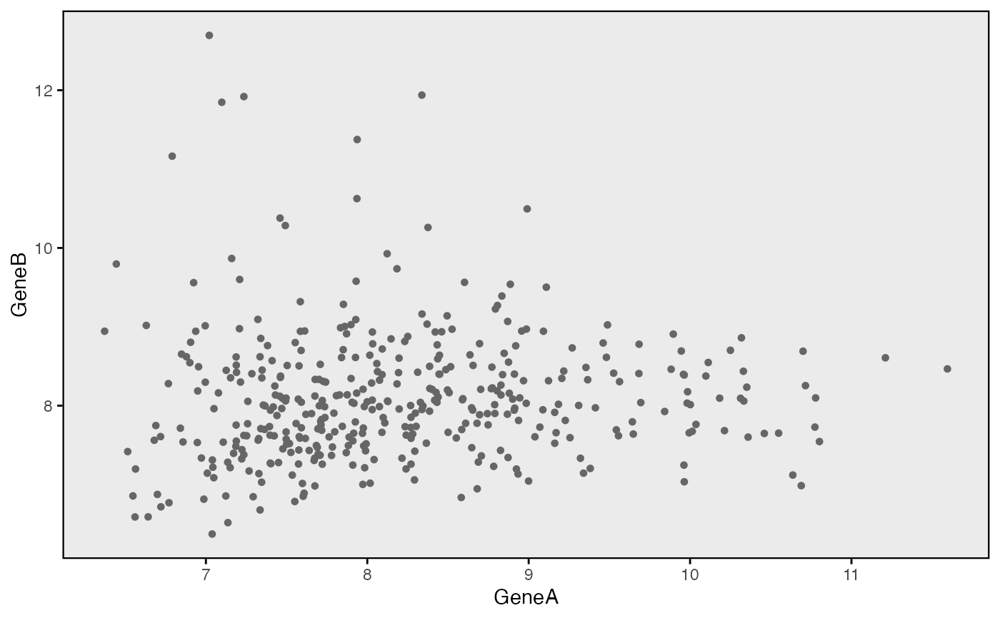
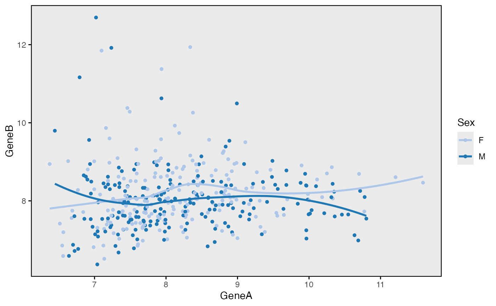

Scatter plot
wrapper_point_plot_core.RdScatter plot
wrapper_point_plot_core( data, x_var, y_var, color_point_var = NULL, facet_var = NULL, colors_point = NULL, scale_gradient = "gradientn", color_low_point = "#42399B", color_mid_point = "white", color_high_point = "#D70131", midpoint = 0, variable_names = NULL, xlab = NULL, ylab = NULL, title = NULL, subtitle = NULL, legend_colors_point_title = NULL, legend_position = "right", facet_label_both = TRUE, point_size = 1.5, point_shape = 20, point_alpha = 1, point_stroke = 0.8, smooth = "none", smooth_method = "auto", smooth_formula = y ~ x, smooth_se = FALSE, smooth_size = 2, smooth_linetype = 1, title_size = 12, strip_text_size = NULL, facet_scales = "fixed", xlim = NULL, ylim = NULL, background_grid_major = "none" ) wrapper_point_plot_core_strat( data, x_var, y_var, color_point_var = NULL, facet_var = NULL, strat1_var = NULL, strat2_var = NULL, colors_point = NULL, scale_gradient = "gradientn", color_low_point = "#42399B", color_mid_point = "white", color_high_point = "#D70131", midpoint = 0, variable_names = NULL, xlab = NULL, ylab = NULL, title = NULL, strat1_label_both = TRUE, strat2_label_both = TRUE, legend_colors_point_title = NULL, legend_position = "right", facet_label_both = TRUE, point_size = 1.5, point_shape = 20, point_alpha = 1, point_stroke = 0.8, smooth = "none", smooth_method = "auto", smooth_formula = y ~ x, smooth_se = FALSE, smooth_size = 2, smooth_linetype = 1, title_size = 12, strip_text_size = NULL, facet_scales = "fixed", xlim = NULL, ylim = NULL, background_grid_major = "none", strat_scales = "fixed", strat1_nrow = 1, strat1_ncol = NULL, strat2_nrow = NULL, strat2_ncol = 1, less_legends = FALSE )
Arguments
| data | Data frame. |
|---|---|
| strat1_var | Name of the first stratification variable. |
| strat2_var | Name of the second stratification variable. |
Examples
data(bdata) data <- bdata x_var <- "GeneA" y_var <- "GeneB" wrapper_point_plot_core(data = data, x_var = x_var, y_var = y_var)wrapper_point_plot_core(data = bdata, x_var = x_var, y_var = y_var, color_point_var = "Sex", smooth = "strat")#>wrapper_point_plot_core(data = bdata, x_var = x_var, y_var = y_var, color_point_var = "Age")